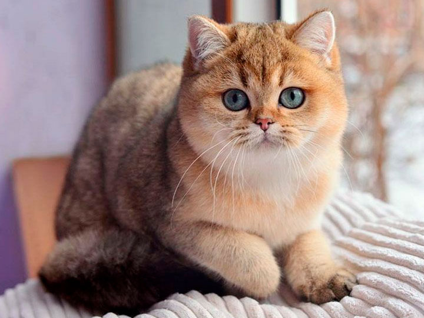

The Chinchilla is colour-type of Persian cat, with the same luxuriant long coat and large round eyes as the Persian. Although considered a Persian type, Chinchillas typically have a moderate construction, with a more prominent muzzle, and a lighter build than the Persian. Despite this, they are a cobby, compact cat of some substance, with large paws and a chunky body.